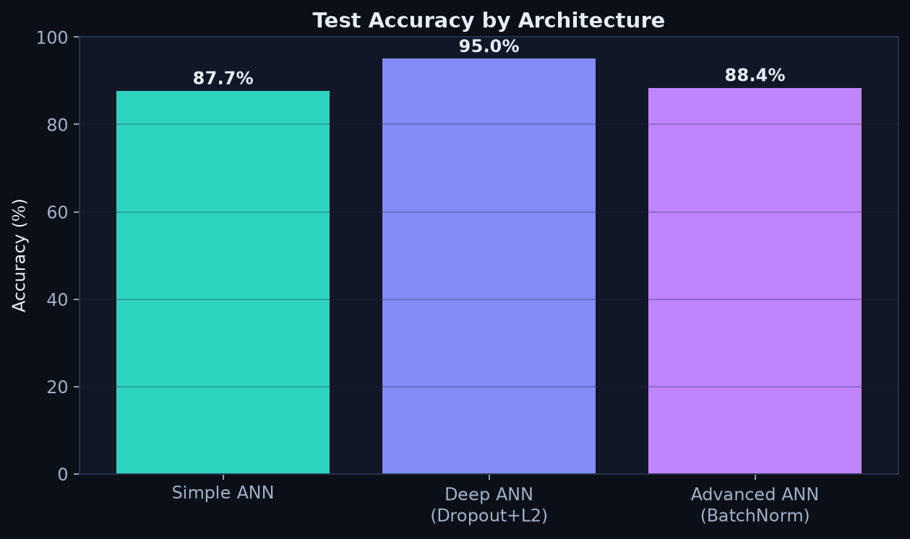
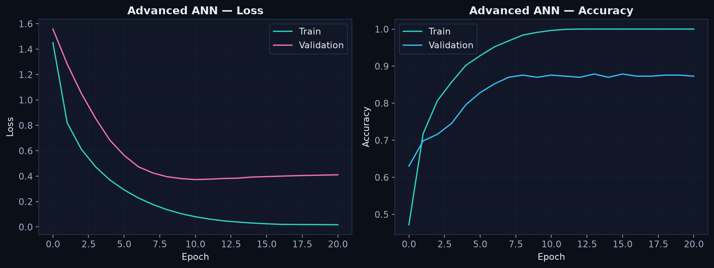
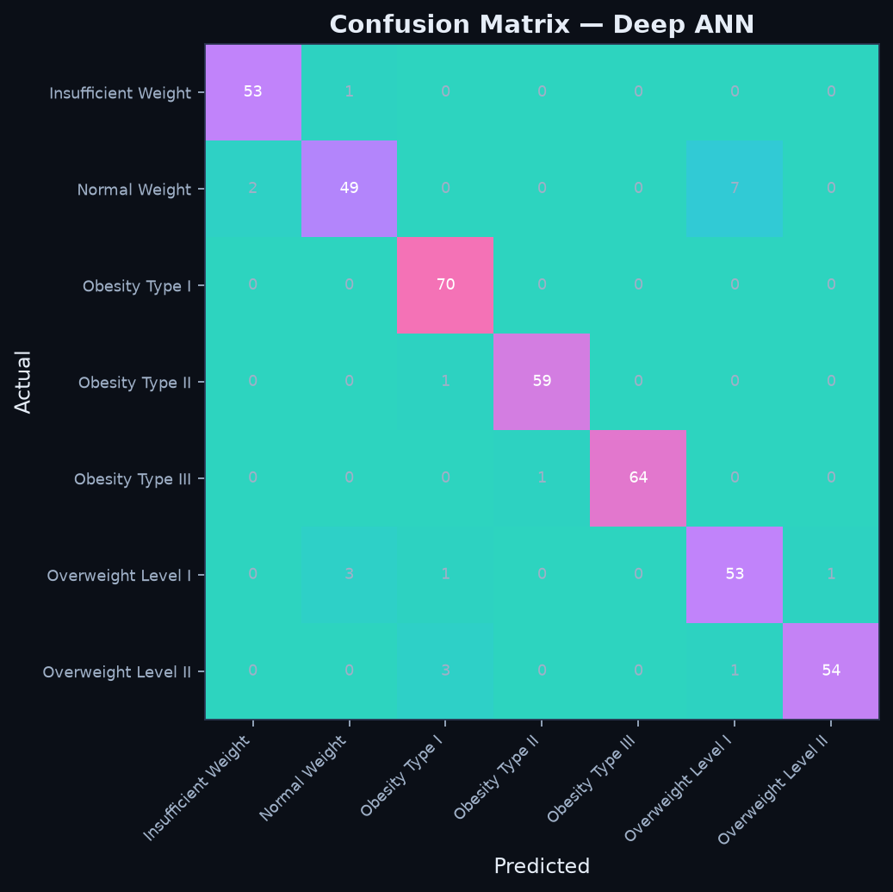
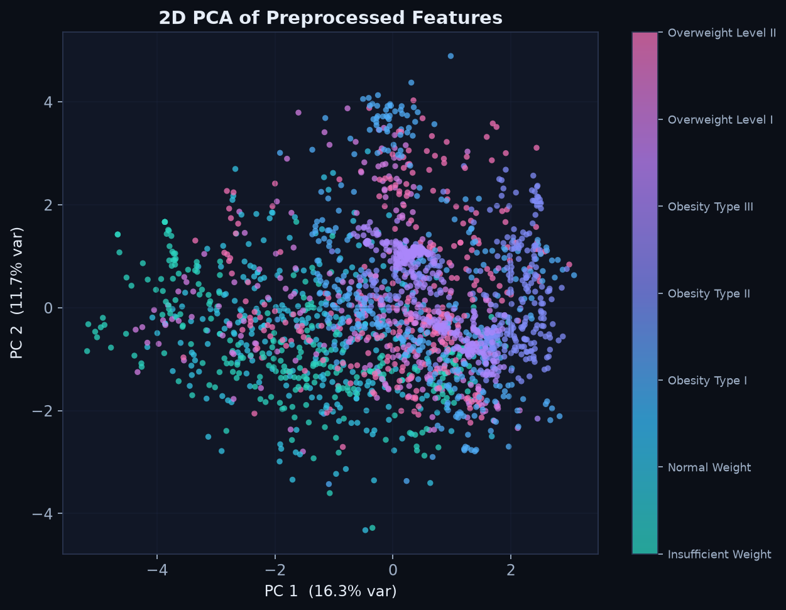
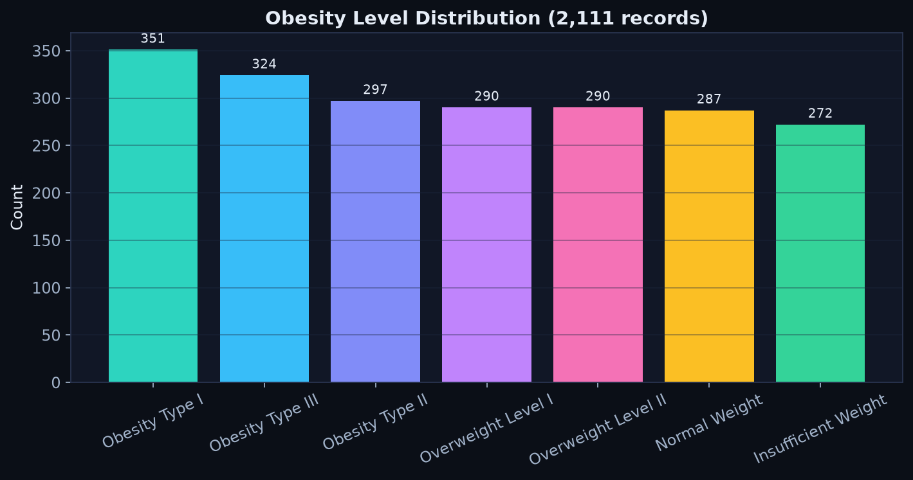

The problem
Obesity category depends on more than one feature: diet, activity, family history, and daily habits. The task was to classify a person into one of seven obesity categories, from underweight through the obesity classes.
My approach
Supervised multi-class classification with artificial neural networks. Prep steps first:
- Encoding categorical lifestyle features.
- Standardisation (StandardScaler) so training stays stable.
- Train/test split so accuracy is measured on unseen data.
Then I trained and compared three ANN architectures:
- Baseline ANN: small network as a starting point.
- Deep ANN: more layers for non-linear patterns.
- Regularised ANN: deep model plus dropout and L2 to reduce overfitting.
Results
The regularised Deep ANN did best at ~95% test accuracy, up from the ~87% baseline. Train and validation curves stayed close. I used confusion matrices to see which classes got mixed up, and learning curves to check the model was learning real signal.
Takeaways
Adding layers alone was not enough. Dropout and L2 made the model more reliable. Also: always read confusion matrices and curves, not just one accuracy number.
Results & visualisations
From training all three architectures on the full dataset. View the code & notebook on GitHub →




